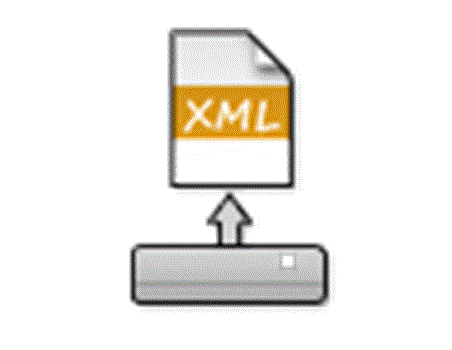

In this step, you can save your family health history to your computer or portable storage device as an XML data file. This data file can be opened in this website later to update your family health history.
Press 'Save to Computer' and your browser will put the file in your preferred download location
You can save the file to the family-t server by signing in to family-t and saving the file with a name.